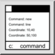

工具列 / 圖示:

QCAD 的指令行允許您啟動指令、輸入座標或輸入距離或半徑等值。
絕對座標以「x,y」格式輸入：
40,5
相對座標以「@x,y」格式輸入：
@10,6
絕對極座標以「distance<angle」格式輸入：
10<30
相對極座標以「@distance<angle」格式輸入：
@10<45
輸入座標或值時，可以使用數學運算式根據已知值計算座標。例如，座標 10,5 也可以輸入為：
5+5,30/6
指令行也可以用作計算機。為此，請輸入前面帶有等號的數學運算式：
=3+4 7
可以使用變數儲存值：
=a=5+6 11 =a/2 5.5
可用的數學常數有：
PI, LN2, LN10, LOG2E, LOG10E, SQRT1\_2, SQRT2
可用的數學函數有：
abs, ceil, floor, exp, log, max, min, pow, sqrt, random, round, rad2deg, deg2rad, sin, cos, tan, asin, acos, atan, atan2, log10, log1p, log2, sign, cosh, sinh, tanh, acosh, asinh, atanh, expm1, hypot, cbrt, trunc
這些常數和函數中的大多數是標準 ECMAScript (JavaScript) 函數，並線上記錄。在標準 ECMAScript 中，這些函數是 Math 類別的一部分，因此函數 abs 必須寫為 Math.abs。在 QCAD 指令行中，為方便起見，您可以省略 Math. 部分。三角函數（sin, cos, tan, asin, acos, atan, atan2）接受或返回以度為單位的角度。如果您更喜歡這些函數的弧度版本，請改用原始的 Math. 函數。
函數 rad2deg 和 deg2rad 可用於在弧度和度之間轉換角度。